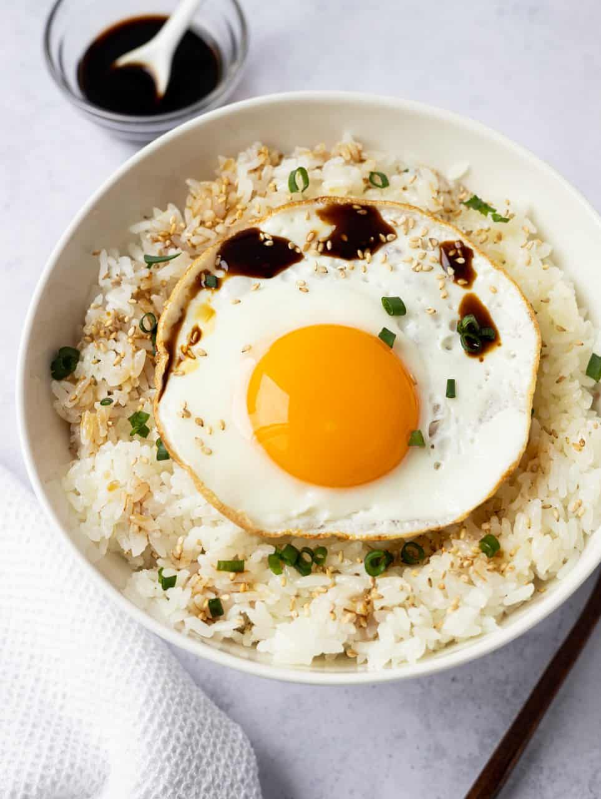

Gyeran Bap (Korean Egg Rice)

What is Gyeran Bap?
Gyeran Bap, literally "korean egg rice", is a recipe consisting of steamed
white short grain rice with a fried egg over top, seasoned with soy sauce,
green onion, sesame seeds, sesame oil and butter. It is very easy to make
and is great for breakfast, lunch or dinner.
Now if you ask any Korean person about this dish, you'll learn that each
household has their own version of this simple dish. Some people add
butter, some don't or some add gochujang. It's really all up to you. But
I'm going to share a Korean egg soy sauce rice that is easy, accessible,
and basic so that if you want to jazz it up you totally can!
Ingredients:
1 Serving
- 1 ½ cups cooked short grain rice
- 1 Tbsp unsalted butter
- ½ tsp sesame oil
- 1 Tbsp soy sauce
- 1 tsp sesame seeds
- 1 Tbsp green onions, finely sliced
- 1 large egg
- ½ tsp cooking oil
Steps
-
Cook your rice according to package instructions. Once cooked, mix with
butter until well combined. Transfer to a serving bowl.
-
In a non-stick pan set over medium heat, add cooking oil and fry your
egg sunny side up or easy over (the choice is up to you). If you enjoy
eggs with crispy edges, add more oil. If you like eggs without crispy
edges, only lightly grease the pan. Fry the egg until the whites are
cooked but the yolks are runny. Place egg over top of buttered rice.
-
Next sprinkle sesame seeds over top, sesame oil, chopped green onions
and soy sauce, as much as desired for the latter.
-
Mix the egg into the rice along with the other ingredients and enjoy!